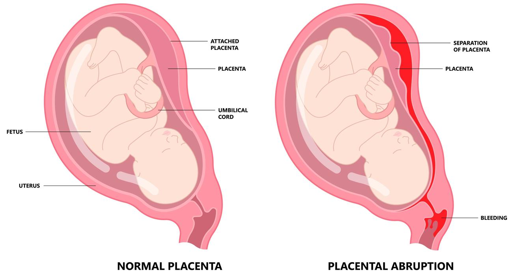

The placenta is a special organ that acts as a lifeline to give the baby food and oxygen during pregnancy. Placental abruption happens when the placenta separates from the wall of the uterus before the baby is born. This can cause bleeding and might be dangerous for both mother and baby.

Placental abruption can be scary. You are not alone. Your care team is here to support you every step of the way.
The risk is higher if:
You are over 35.
You have high blood pressure.
You smoke or use drugs during pregnancy.
You have had a placental abruption in the past.
You have injury or trauma to the abdomen, or belly area, like a fall or car accident.
Your care team may:
Do a physical exam
Use ultrasound to see images of the placenta and baby
Check the baby’s heartbeat
Treatment depends on how bad the abruption is. The only cure is delivering the baby. In mild cases, it may be possible to delay delivery so the pregnancy can progress.
Mild cases: You may need bed rest and close monitoring. Your care team may admit you to the hospital so they can monitor the baby every day.
Severe cases: Your baby might need to be delivered right away, no matter how far along the pregnancy is.
Abruption can lead to:
Severe blood loss
Early or preterm delivery of the baby
Low birth weight
Danger to the mother’s and the baby’s life
If you have placental abruption, your care team needs to monitor you closely and may need to deliver your baby to lower the risk of these complications.
Do not smoke or use drugs during pregnancy.
Go to your regular prenatal exams.
Manage high blood pressure with your care team.
With care, your body can heal after placental abruption. You can get pregnant again, but you will be at higher risk for placental abruption with every pregnancy. Your care team will need to closely monitor all future pregnancies.
Call if you have:
New, worsening, or sudden belly pain or back pain
Bleeding from the vagina
A sudden gush of fluid
Contractions or cramps
Fewer than 10 baby movements in 2 hours, which can include movements like a kick, punch, roll, jab, or flutter
Any noticeable decrease in the baby’s usual movement pattern
Get help right away if:
You have heavy bleeding.
You have severe, constant pain.
You feel weak, dizzy, or like you might faint.
Thank you for trusting us with your care. We are here to support you and want you to feel your best. Contact us with any questions.
IF YOU HAVE A MEDICAL EMERGENCY, CALL 911 OR GO TO THE EMERGENCY ROOM.
The information presented is intended for general information and educational purposes. It is not intended to replace the advice of your health care provider. Contact your health care provider if you believe you have a health problem.
Last updated May 2025
© 2025 Mytonomy, Inc. All rights reserved.